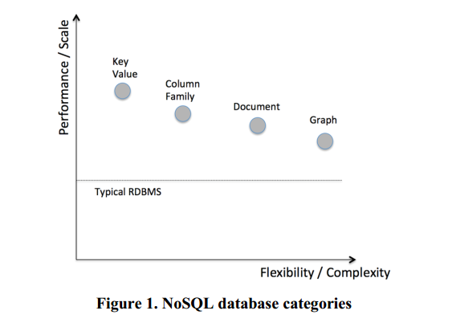

本文主要讲述数据库的发展历程，以及实现一个数据库需要考虑的内容。
数据库发展史
1960年IBM出现了第一个DBMS，叫做IMS，原因就是当时人们觉得应用应该和数据分离，这样开发者就可以把重心放到如何读数据以及取数据，就不用去考虑数据库开发的事情。
在1980年到1990年期间，人们发现这样的关系型数据库编程方式跟面向对象的编程方式违背（impedance mismatch），所以，就出现了面向对象的DBMS。但是面向对象的DBMS并没有火起来，而是出现了一些像XML等语言，这跟后来的document-oriented NoSQL很像(mongodb),后面会介绍NOSql的类型。
随着2000年之后，互联网的兴起以及数据量的增大，用户的并发性增大，以及要求时时on-line，对以往的关系型数据库提出了挑战。为了应对上述挑战，有如下两个解决办法：
- 使用更好的机器，更大的硬盘和CPU等。这样带来的好处很小，而且把一个数据库系统移到另外一个数据库系统工作量很大，而且比较繁琐。
- 数据库中间件，把一个数据库分布在一些廉价的机器上面，中间件负责做查询转发调度（请参考此文 分布式MySQL集群方案的探索与思考）但是这种方式对于跨表的join等事物支持不好。
nosql的发展。一些公司开始慢慢的向数据库中间件开始转向分布式DBMS。动机主要有以下三点：
- 以往的数据库都支持ACID特性，但是牺牲了可用性以及性能。但是现在的一些互联网应用更加关注可用性以及性能，他们希望能够支持更多的并发度以及on-line all the time.
- 很多时候，现在的web应用并不需要以前DBMS的那么多的性能作为存储。
- 现在的应用仅仅是简单的读写查询请求，关系型模型以及SQL复杂的语句对于现在的应用来说，就是杀鸡用牛刀。
所以，NoSql崛起。NoSql主要有以下几种类型。

到2000年末的时候，虽然一些应用已经可以很好的应用到NoSql系统中，但是还有很多的应用并不能应用Nosql（比如金融系统或是订单系统），因为这些系统需要很强的一致性。而大部分的Nosql系统都是弱一致性(eventual consistent)，所以NewSql出现了。所以简单的讲，NewSql就是结合了Nosql数据库的可扩展性，同时又满足了关系型数据库中的事物特性(ACID)。
NewSql的特性
新的架构
Transparent Sharding Middleware
Database-as-a-Service
设计一个数据库系统需要考虑的问题
Main Memory Storage
Partitioning / Sharding
Concurrency Control
- 两阶段锁(twophase locking (2PL) schemes)
- timestamp ordering (TO) concurrency control
Secondary Indexes
Replication
- active-active replication：把一个请求发到所有的副本上
- activepassive replication：只把请求发给主副本上，当主副本完成后，在进行其他副本的复制。
Crash Recovery
参考文献
- Pavlo A, Aslett M. What’s Really New with NewSQL?[J]. Acm Sigmod Record, 2016, 45(2):45-55.
- Borkar D, Mayuram R, Sangudi G, et al. Have Your Data and Query It Too: From Key-Value Caching to Big Data Management[C]// International Conference on Management of Data. ACM, 2016.